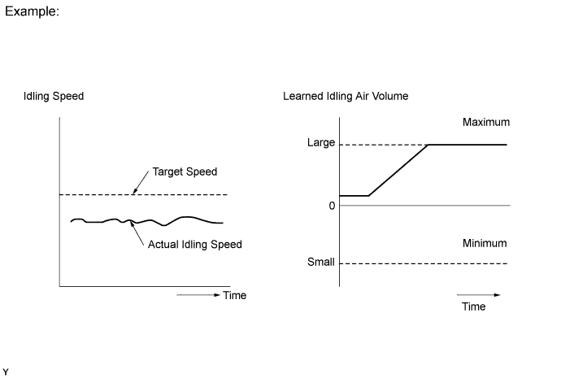

DTC P0505 Idle Control System Malfunction |
| DTC Code | DTC Detection Condition | Trouble Area |
| P0505 | The idling speed continues to vary greatly from the target idling speed (2 trip detection logic). |
|

| 1.CHECK ANY OTHER DTCS OUTPUT (IN ADDITION TO DTC P0505) |
Connect the intelligent tester to the DLC3.
Turn the engine switch on (IG).
Turn the tester on.
Enter the following menus: Powertrain / Engine and ECT / DTC.
Read DTCs.
| Result | Proceed to |
| P0505 is output | A |
| P0505 and other DTCs are output | B |
|
| ||||
| A | |
| 2.CHECK PCV HOSE CONNECTIONS |
Check the PCV hose connections.
|
| ||||
| OK | |
| 3.CHECK AIR INDUCTION SYSTEM |
Check the air induction system for vacuum leakage (Click here).
|
| ||||
| OK | |
| 4.CHECK THROTTLE VALVE |
Check the throttle valve condition.
|
| ||||
| OK | ||
| ||